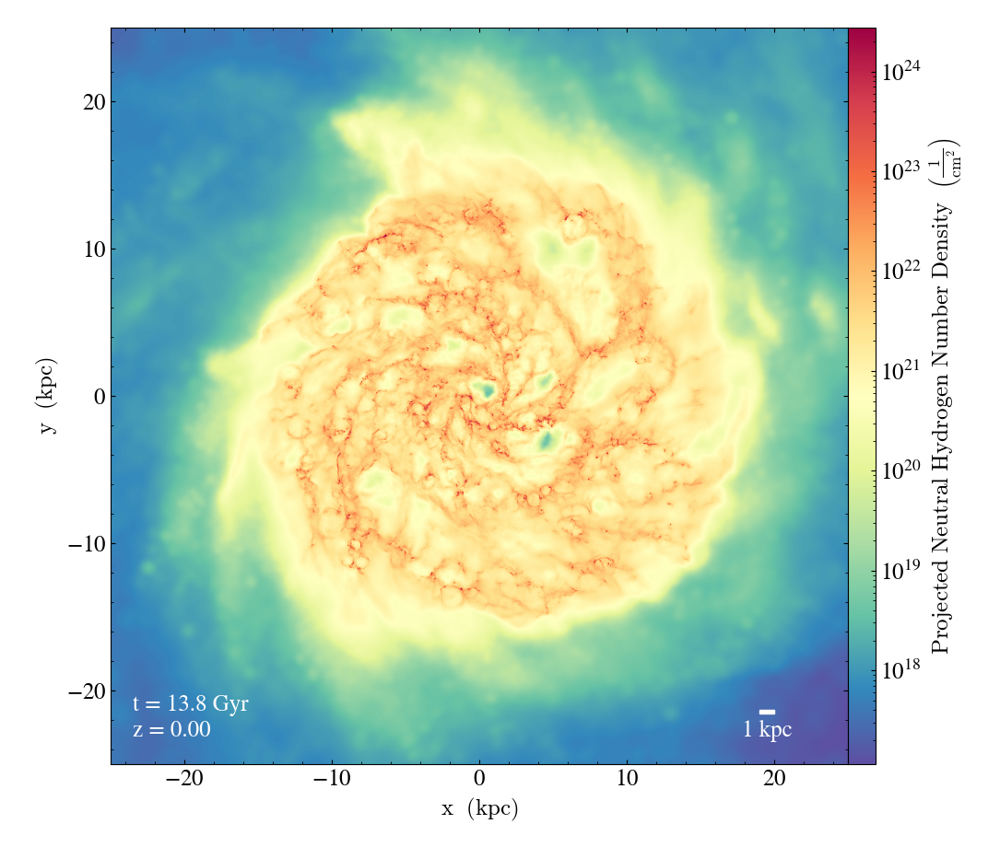
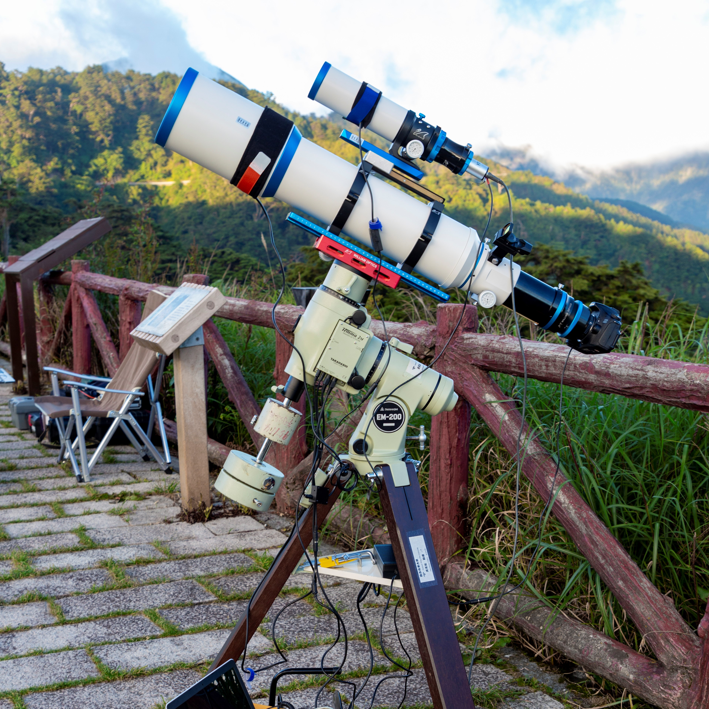
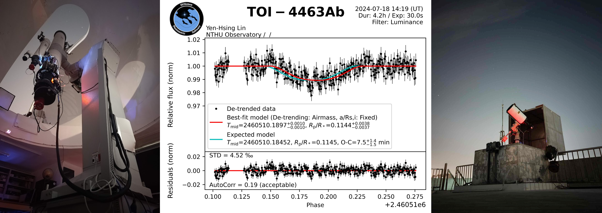

-
Academic
First year PhD student at UCSD Department of Astronomy & Astrophysics.
-
Science Communication
The cheif editor of EASY Astronomy and Earth Science promotion team. Dozens of publications on astronomy-related topics.
-
Astronomy Community
Senior memember of NTHU Astronomy Club. Former supervisor of Astronomy Club Union of Universities in Taiwan (ACUUT) and HGHS astronomy club.
Research / Academic experience
With the passion of understanding the complicated ecosystem of galaxy formation and evolution, I am currently working with Prof. Dusan Keres as part of the FIRE collaboration, investigating the role of cosmic rays in galaxy evolution using the state-of-the-art cosmological zoom-in simulations.
Education
-
Undergraduate Program (2017 - 2021):
Interdisciplinary program of science, double program in physics and astrophysics, National Tsing Hua University, Taiwan. -
Master's Program (2021 - 2023):
Institute of Astronomy, National Tsing Hua University, Taiwan. -
PhD Program (2024 - Current):
Department of Astronomy & Astrophysics, UC San Diego, CA, USA.
Research Experience
-
Academia Sinica Institute of Astronomy and Astrophysics (2019 - 2021):
Working with Dr. Hiroyuki Hirashita on dust evolution and radiative transfer effects in high redshift galaxies. -
Institute of Astronomy, National Tsing Hua University (2021 - 2024):
Working with Prof. Hsiang-Yi Karen Yang on simulations of AGN jet mode feedback in galaxy clusters. -
Department of Astronomy & Astrophysics, UC San Diego (2024 - Current):
Working with Prof. Dusan Keres on simulations of CR in galaxies.
Publications
- Yen-Hsing Lin, Hiroyuki Hirashita, Peter Camps, Maarten Baes, "Geometry effects on dust attenuation curves with different grain sources at high redshift", MNRAS, Volume 507, Issue 2, October 2021, Pages 2755-2765
- Yuan-Ming Hsu, Hiroyuki Hirashita, Yen-Hsing Lin, Peter Camps, Maarten Baes, "Effects of dust sources on dust attenuation properties in IllustrisTNG galaxies at z~7", Monthly Notices of the Royal Astronomical Society, Volume 519, Issue 2, February 2023, Pages 2475-2485.
- Yen-Hsing Lin, H.-Y. Karen Yang, Ellis R. Owen, "Evolution and feedback of AGN Jets of different Cosmic-ray Composition", Monthly Notices of the Royal Astronomical Society, Volume 520, Issue 1, March 2023, Pages 963-975.
- Yen-Hsing Lin, H.-Y. Karen Yang, "AGN Jet-inflated Bubbles as Possible Origin of Odd Radio Circles", ApJ, Vol 974, Page 269.
For a more complete introduction (details on my research, awards, invited talks, etc), please refer to Research Hightlights and Research Records.
Beyond Main Research Topic
Beyond my main research in AGN feedback, I also love using numerical simulations to solve other problems in physics and any other topic I am interested in. Checkout my Simulation Gallery!Observation
While my research focus on computational astrophysics, I am also an amateur observer and astrophotographer.
Astrophotography
Telescope setup in 2018. Credit: An-Ting Hsu During my time in the NTHU astronomy club, I learned to operate 10-cm-class telescopes for astrophotography. The state-of-the-art setup of the club comprising a Takahashi EM-200 equatorial mount, a William Optics FLT-132 telescope, and a modified Nikon Z6II camera. Our equipment is controlled using N.I.N.A., while guiding is done through PHD2. For image calibration and stretching, I utilize Siril, and post-processing is done using GIMP. From time to time, I also choose to guide the photons into my eyes instead of CMOS.
Although these observations may not hold much scientific value, they provided me with valuable intuition about the size, brightness, and position of astronomical objects, which can hardly be acquired through textbooks and exams.
Observing under a starry sky really pulls you into the wonder of cosmos.
Observations
Besides amateur astrophotography, I am also using some larger telescopes.
The NTHU observatory, originally built in the 1990s, underwent modernization in 2018. Since its completion, I have beening participating in the testing, operation, and upgrading of the observatory. In March 2023, I was certified as the observation operator and have since carried out various scientific observations such as monitoring exoplanet transits for the Exoclock Project, as well as amateur/educational observations. I have also utilized the Lulin One-Meter Telescope (LOT) and the Steward Observatory Kuiper 61" Telescope for ExoClock observations during semesters 2024B, 2024C, and 2025A.
Science Communication
Since 2017, my friends and I established EASY Astronomy and Earth Science promotion team, a non-profit and independent team that aims to share the beauty of astronomy and Earth science with the general public by articles, videos, and online talks.
Besides our own Facebook, Instagram, YouTube, and Blogger, we are also collaberating with Science Monthly (the first science magazine in Taiwan), Pansci (the largeset online pop-science platform in Taiwan), and Scientific American Taiwan.
As the chief editor, my job is to manage the schedule of posting, reviewing my teammates' article and contact with our collaborator. From time to time, I would also come up with new idea and lead my team to achieve the goal.
- ~12,000 followers on Facebook
- ~2,500 followers on Instagram
- ~100,000 views on Blogger
- ~70 articles published by EASY
- ~40 articles published by myself
Community
I have been heavily involved in the amateur astronomy community in Taiwan.
In 2017, I joined NTHU astronomy club and later served as the staff of Astro-Camp (2018), education officer (2018 - 2019), vice director (2019 - 2020) and the organizer of astrophysics study group (AstroRead, 2018 - 2020).
During those years, I, along with other club cabinets, have host tens of club lecture, seminar, observation campaign and other activities.
The Astronomy Club Union of Universities in Taiwan (ACUUT). Originated in 2014, ACUUT is a diverse community formed by 35 university astronomy clubs throughout Taiwan. Officially registered in 2019, it attained the status of a national social organization equivalent to ASROC. We aim to integrate the experiences, knowledge, and resources of astronomy clubs across Taiwan, promote intercollegiate exchange in astronomy knowledge and techniques, and assist in the management of clubs at each university. Simultaneously, it leverages the advantage of overcoming geographical constraints to extend the impact of astronomy to a broader audience.
From 2018, I start to get involved in ACUUT and served several leading roles, which includes:
- Education officer of the 5th Astro-Festival (2019)
- Coordinator of the Camp of Leadership (2021)
- Supervisor for the whole ACUUT (2021 - 2023)
- Coordinator of the astrophotography workshop (2022)
- Coordinator of the space technologies workshop (2022)
- Observation officer in the 8th Astro-Festival (2022)
- Chief editor of the science communication group (2022 - 2024)
- Adviser of ACUUT remote observatory project (2024 - Now)
From 2019 to 2022, I also served as the supervisor of HGHS astronomy club.